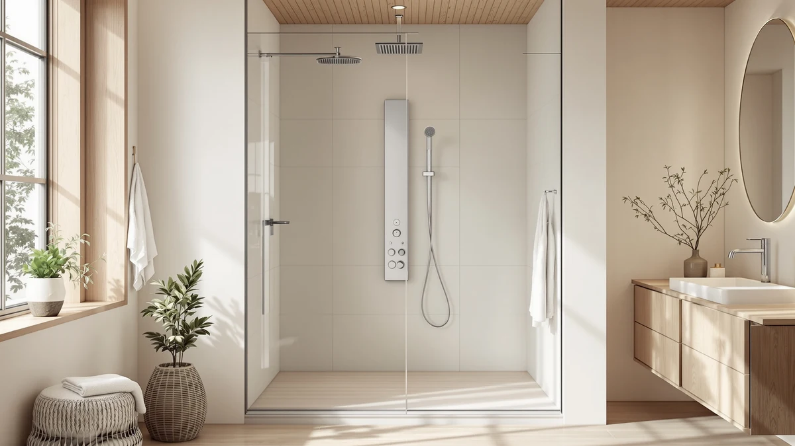

Can You Install a Shower Panel on Any Wall? (2026)
Prices and picks verified as of September 2026. Independent, reader-supported reviews.


Things to Know Before You Buy
- Wall material matters less than what's behind it: studs, blocking, or masonry need to be there to hold 15 to 40 pounds of panel.
- Your existing hot and cold supply lines matter more than the wall type; matching diverter spacing avoids moving plumbing.
- Telescoping, floor-to-ceiling panels are more forgiving than fixed wall-mounted towers when you're unsure what's behind the tile.
- Multi-jet panels need at least 40 to 60 PSI of water pressure to keep every jet spraying at full strength.
Can you install a shower panel on any wall? Not without checking two things first: what's physically behind the tile, and where your hot and cold water lines already run. A shower panel tower needs solid backing to hold 15 to 40 pounds of steel or aluminum, and a diverter valve that lines up with your existing plumbing, so the real answer depends more on your bathroom's guts than on the panel you picked out.
Renters and owners hit this question for different reasons. An owner doing a full remodel can move plumbing and add blocking behind new drywall, so almost any wall becomes viable with enough budget. A renter or someone doing a quick upgrade is usually stuck working with the wall and the plumbing that's already there, which narrows the field to panels designed for retrofit installs.
This guide covers which walls work without modification, which panel types are more forgiving on an unknown wall, the mounting mistakes that cause leaks and loose panels, and how to keep a panel sealed once it's installed.
What You Need to Know
Ask can you install a shower panel on any wall and a plumber will ask three questions back: what's the wall made of, where do your hot and cold lines run, and how much weight can the studs behind the tile actually hold. A shower panel tower isn't a curtain rod you tap into drywall anchors. Most towers weigh between 15 and 40 pounds once water is running through them, and the mounting brackets need to grab something solid, ideally wood studs or blocking, not just tile and mortar.
The plumbing side matters more than the wall material. Panels connect to your existing hot and cold supply through a diverter, and that diverter has to line up with where your pipes already exit the wall. On a stud wall with plumbing directly behind it, shared with a laundry room or another bathroom, running or rerouting lines is straightforward. On an exterior wall or a wall backed by a closet with no access, moving a valve means opening tile, and that turns a $200 panel into a job that costs several hundred dollars in labor.
Concrete and masonry walls change the mounting hardware you need, anchors rated for concrete instead of wood screws, but they hold weight better than a stud wall ever will. Tile over drywall without solid blocking is the riskiest combination: the tile looks solid, but the substrate behind it might not support a 30-pound panel over years of daily use and vibration.
Types and Categories
Not every shower panel mounts the same way, and matching the type to your wall decides most of whether the installation goes smoothly.
Wall-mounted tower panels bolt directly to the wall at two or three points along their height. They work best on stud walls or masonry where you can hit solid backing at each bracket, and the studs or masonry need to line up with the panel's fixed bracket spacing, which is rarely adjustable.
Telescoping or adjustable-pole panels brace between the floor and ceiling instead of relying only on wall brackets, which spreads the weight rather than concentrating it on a couple of anchors. These are the more forgiving option on a wall where you're not certain what's behind the tile, since less of the panel's weight rides on drywall anchors.
Recessed or shower-surround panel systems, which some manufacturers sell as part of a full tub or shower kit, are built for new construction: installed before the tile goes up, with plumbing roughed in to match. Retrofitting one into an existing finished bathroom usually means removing tile first.
Masonry and concrete walls accept almost any panel type once you swap standard wood screws for concrete anchors, but they take longer to drill and don't forgive a misplaced hole the way drywall does. Wood-frame stud walls are the most common case in US homes and the easiest to work with, provided the studs sit where the panel needs them.
How to Choose
Before comparing finishes or jet counts, work through four questions that decide whether a given panel will actually work on your wall.
Start with what's behind the tile. If you can get into an attic, basement, or an access panel on the other side of the wall, you can confirm whether you have wood studs, masonry, or an open plumbing chase. If you can't get access, a stud finder and a look at where your current shower valve sits will tell you most of what you need before you decide can you install a shower panel on this particular wall without extra work.
Next, check your water pressure and supply configuration. Panels with multiple body jets split one water line several ways, so they need higher pressure, most manufacturers recommend at least 40 to 60 PSI, to keep every jet feeling strong. A single-function rain panel is more forgiving on low-pressure homes.
Weigh the panel's mounting hardware against your wall type. Lighter aluminum-and-ABS towers in the 15 to 20 pound range are reasonable on drywall with anchors rated for the weight, though studs are still better. Heavier stainless steel panels in the 30 to 40 pound range need direct connection to studs or masonry anchors; hanging one from drywall alone is asking for it to pull loose within a year or two.
If you're renting, prioritize panels that clamp or brace between floor and ceiling instead of ones that require drilling into tile, since those come out cleanly at move-out.
Finally, match the finish and control layout to how you actually shower. A digital temperature display is convenient if you share a bathroom with kids or older family members who scald easily. A simple two-handle mixer is more repairable if a part eventually fails, since replacement valves are easier to source.
Common Mistakes to Avoid
The most common mistake is mounting into tile alone. Tile and thinset aren't structural materials, and pilot holes drilled straight into tile without hitting a stud, or without a masonry-rated anchor behind cement board, loosen within a year of daily use and water exposure.
A close second is ignoring a diverter valve mismatch. Buyers assume any panel fits any existing shower plumbing because the boxes all show similar hookups, but valve spacing and thread type vary between brands. Measure your existing hot and cold line spacing before ordering, not after the panel arrives.
Skipping a water shutoff before starting work causes more emergency calls than any other step. Shut off the main or the local stop valves, and drain the lines, before disconnecting anything, even on a panel advertised as a simple retrofit.
Underestimating water pressure needs is another frequent problem. A shopper who buys a six-jet tower without checking their home's PSI ends up with jets that trickle instead of spray, and no amount of cleaning the nozzles fixes a pressure problem.
Skipping the caulk and seal step around the wall penetration invites water behind the tile, which is how small leaks turn into rot and mold that stays hidden until the drywall or subfloor is already damaged.
Care and Maintenance
Once a panel is mounted, most of the maintenance work protects the wall connection, not just the fixture itself. Check the caulk line around the panel's base and back plate every six months; a cracked bead lets water track behind the tile even if the panel itself is sealed.
Hard water leaves mineral buildup on nozzles and jets faster than on a standard shower head, since panels have more outlets for scale to clog. Soaking the shower head and jet plates in a diluted vinegar solution every few weeks keeps flow even across every jet, based on manufacturer maintenance guides for multi-jet systems.
Stainless steel fronts hold up better than chrome-plated plastic over years of daily use, but they still benefit from a wipe-down with a non-abrasive cloth after each shower to prevent water spotting and mineral film.
Check the wall-mounting hardware once a year. Owners report that brackets on heavier towers can work loose slightly over time from thermal expansion and daily use, so a quarter-turn on the mounting bolts keeps the unit from developing play at the wall.
If you notice a soft spot, discoloration, or a musty smell near the panel's base, that usually means water has gotten behind the seal. Address it right away. Waiting turns a resealing job into a wall repair.
Our Top Picks
If your wall checks out for a mount, these three panels cover the range from a forgiving stud-wall install to a heavier stainless build, based on our comparison of specs, materials, and verified owner reviews.

Editor’s Pick
Greenspring Shower Panel - Adjustable
Its adjustable telescoping pole braces between floor and ceiling instead of relying only on wall anchors, making it one of the more forgiving options when you're not fully sure what's behind the tile.
$239.99
Check Price on Amazon
Best Value
Shower Panel Tower System with
A straightforward wall-mounted tower built for standard stud spacing, and reviewers consistently note it's an easy match for a typical US bathroom retrofit at this price.
$179.99
Check Price on Amazon
Premium Choice
ELLO&ALLO LED Stainless Steel Bathroom
Heavier stainless steel construction means it needs solid backing at every bracket, but that same weight and material give it a longer expected service life than lighter towers.
$249.99
Check Price on AmazonFrequently Asked Questions
Can you install a shower panel on any wall?
Not on every wall without changes. The panel needs a wall that can support its weight, ideally wood studs, blocking, or masonry, and hot and cold supply lines close enough to the panel's diverter to connect without moving plumbing. A stud wall with existing shower plumbing behind it is the easiest case. An exterior wall or one with no plumbing access usually needs a plumber before the panel goes up.
Do I need a plumber to install a shower panel?
If your existing hot and cold lines line up with the panel's diverter, many owners handle the mounting and connection themselves in a weekend. If the valve spacing doesn't match, or you need to move a line to fit the panel, hire a licensed plumber. Leaks at the diverter are the main risk of a DIY installation gone wrong.
Can a shower panel be mounted on drywall?
Only with anchors rated for the panel's weight, and preferably backed by a stud or added blocking behind the drywall. Lighter panels under 20 pounds are more forgiving on drywall alone. Heavier stainless steel towers should connect to studs directly rather than relying on drywall anchors.
How much weight can a bathroom wall hold for a shower panel?
A wood stud can support well over 40 pounds when a bracket is screwed directly into it, more than any shower panel weighs. Drywall alone, without hitting a stud, typically holds only 10 to 20 pounds per anchor point depending on the anchor type, which is why matching the panel's weight to the wall's real structure matters.
What water pressure do I need for a shower panel with body jets?
Most manufacturers recommend at least 40 to 60 PSI for a panel with multiple body jets, since the water supply splits across every outlet. Homes with lower pressure will still work but may see weaker spray from the jets. A single-function rain panel needs less pressure than a full multi-jet tower.
Verdict
So, can you install a shower panel on any wall? Only if that wall can take the panel's weight and sits close enough to your existing hot and cold lines to skip an expensive valve move. A stud wall backed by existing shower plumbing is the easy case. An exterior wall, a wall with no access behind it, or tile with no solid blocking turns a straightforward swap into a plumbing project.
Check your wall type and supply line spacing before you fall for a specific finish. Once you've confirmed the wall works, an adjustable model like the Greenspring Shower Panel - Adjustable is a practical starting point, since its telescoping pole spreads weight between floor and ceiling instead of asking a handful of wall anchors to carry the whole load. If your wall has solid stud or masonry backing, a heavier stainless option holds up longer under daily use.
Match the panel to the wall you actually have, and the installation goes the way it should.